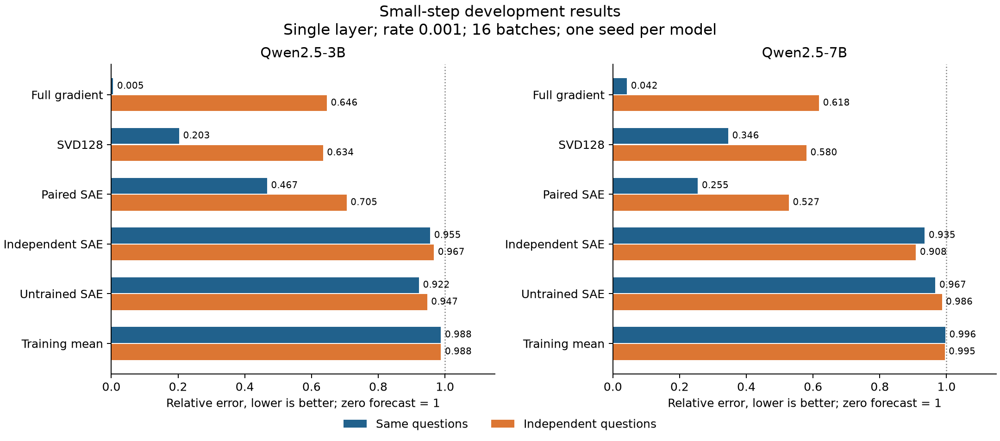
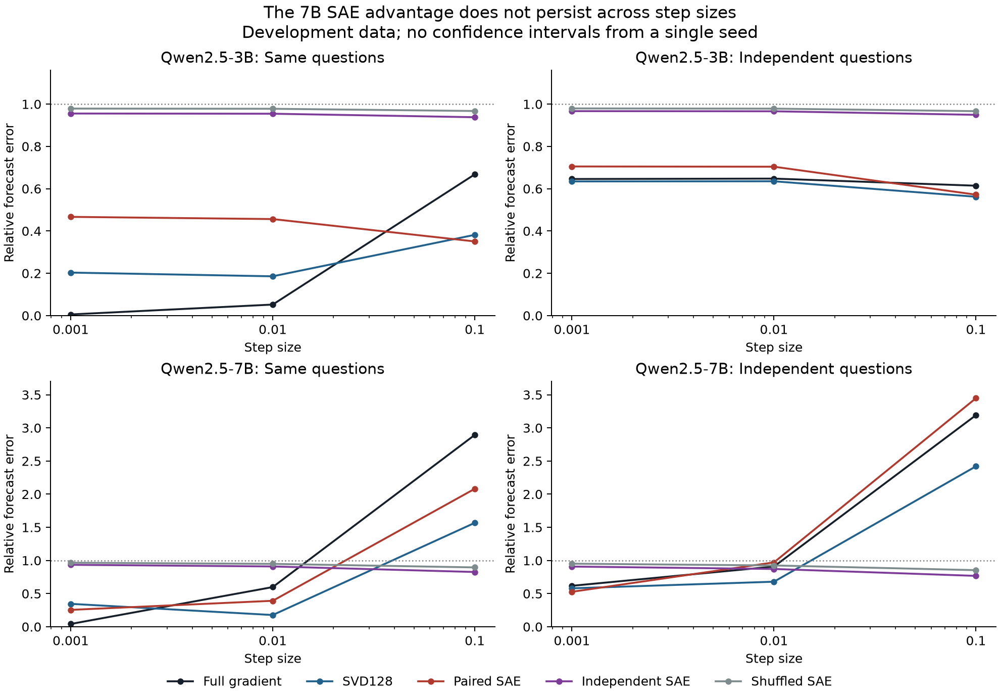

Completed 13 October 2026 UTC. This is exploratory development, with one seed for each of two models.
The 7B SAE beats SVD128 at the smallest step, but loses at larger steps and on 3B. It uses more storage than the full gradient. The evidence does not establish useful compression, interpretable features, or a reliable behavior-change predictor.
Keeping input-feature associations follows the standard linear-layer gradient outer-product identity. That identity is not a research discovery.

At rate 0.001, the paired SAE's 7B error was 0.255 on the same questions versus 0.346 for SVD128. Independent-question error was 0.527 versus 0.580. The full gradient was much better on the same questions, at 0.042. On 3B the SAE lost to SVD128, 0.467 versus 0.203. Average gradients and untrained features did not explain the 7B advantage.
Removing the learned SAE offset improved 7B same-question error to 0.220, but worsened transfer to 0.605. This distinction matters: good reconstruction and good transfer are different objectives.

At rate 0.01, 7B SAE same-question error rose to 0.392, versus 0.177 for SVD128. At 0.1, first-order full-gradient error exceeded 2.8. Shrinking forecasts can help when the linear approximation breaks down. The follow-up scalar control fits one nonnegative multiplier on other batches and other evaluation questions. On 7B at 0.1 it reduced full-gradient transfer error from 2.840 to 0.685 on those cross-validation folds. Those folds have only four evaluation questions per category, so their numbers must not be compared directly with the eight-question pilot totals.
Held-out raw-gradient reconstruction FVU was 1.111 for 3B and 1.117 for 7B. Values above one mean the SAE did worse than the training-set mean on that reconstruction metric.
| Model | Full weight update, MiB | SAE contexts, MiB | SVD32 contexts, MiB |
|---|---|---|---|
| Qwen2.5-3B | 86.0 | 172.0 | 1.4 |
| Qwen2.5-7B | 259.0 | 518.1 | 2.4 |
These counts exclude shared dictionaries and model weights. Retaining an input vector for each feature costs about twice as much as storing the full weight update. Scalar feature totals alone discard the input associations.
The pinned AO checkpoint normalizes each update vector before injecting it. Across 60 cached updates and both token conventions, all 120 hook cases were bit-identical under positive scaling by 0.25, 1, and 4. Eighteen generations covering three updates and both conventions also stayed identical within each scaling comparison.
This is an implementation audit, not a new forecasting result. It applies to this norm-match, identity-encoder configuration, above the norm-clamp floor and with fixed rank and prompt layout. A magnitude predictor using this checkpoint would need another magnitude input. It does not say that every possible LoRAcle is scale-invariant.
Relative L2 errors, lower is better. Scalar calibration is exploratory cross-validation holding out both connected update batches and alternating evaluation-question halves. No tests or confidence intervals are claimed.
| Model | Rate | Method | Same questions | Transfer | CV unscaled | CV scaled |
|---|---|---|---|---|---|---|
| 3B | 0.001 | Full gradient | 0.0053 | 0.6458 | 0.7683 | 0.7702 |
| 3B | 0.001 | SVD32 | 0.3775 | 0.6359 | 0.7625 | 0.7535 |
| 3B | 0.001 | SVD128 | 0.2032 | 0.6344 | 0.7616 | 0.7601 |
| 3B | 0.001 | Paired SAE | 0.4667 | 0.7051 | 0.8041 | 0.7604 |
| 3B | 0.001 | Independent SAE | 0.9555 | 0.9667 | 0.9767 | 0.9398 |
| 3B | 0.001 | Shuffled SAE | 0.9789 | 0.9796 | 0.9857 | 0.9826 |
| 3B | 0.001 | Training mean | 0.9879 | 0.9879 | 0.9915 | 0.9375 |
| 3B | 0.001 | SAE offset only | 1.0966 | 1.0928 | 1.0660 | 1.0000 |
| 3B | 0.001 | SAE without offset | 0.4099 | 0.6750 | 0.7858 | 0.7745 |
| 3B | 0.001 | Untrained SAE | 0.9220 | 0.9465 | 0.9627 | 0.7752 |
| 3B | 0.01 | Full gradient | 0.0520 | 0.6477 | 0.7706 | 0.7700 |
| 3B | 0.01 | SVD32 | 0.3636 | 0.6357 | 0.7635 | 0.7561 |
| 3B | 0.01 | SVD128 | 0.1856 | 0.6350 | 0.7632 | 0.7611 |
| 3B | 0.01 | Paired SAE | 0.4563 | 0.7040 | 0.8044 | 0.7705 |
| 3B | 0.01 | Independent SAE | 0.9545 | 0.9660 | 0.9764 | 0.9394 |
| 3B | 0.01 | Shuffled SAE | 0.9779 | 0.9785 | 0.9850 | 0.9831 |
| 3B | 0.01 | Training mean | 0.9873 | 0.9873 | 0.9911 | 0.9357 |
| 3B | 0.01 | SAE offset only | 1.1012 | 1.0971 | 1.0689 | 1.0000 |
| 3B | 0.01 | SAE without offset | 0.3979 | 0.6740 | 0.7862 | 0.7771 |
| 3B | 0.01 | Untrained SAE | 0.9196 | 0.9451 | 0.9619 | 0.7757 |
| 3B | 0.1 | Full gradient | 0.6679 | 0.6141 | 0.7131 | 0.6608 |
| 3B | 0.1 | SVD32 | 0.2230 | 0.5262 | 0.6553 | 0.6513 |
| 3B | 0.1 | SVD128 | 0.3817 | 0.5619 | 0.6783 | 0.6513 |
| 3B | 0.1 | Paired SAE | 0.3505 | 0.5717 | 0.6848 | 0.7237 |
| 3B | 0.1 | Independent SAE | 0.9379 | 0.9493 | 0.9602 | 0.9318 |
| 3B | 0.1 | Shuffled SAE | 0.9674 | 0.9666 | 0.9737 | 0.9889 |
| 3B | 0.1 | Training mean | 0.9777 | 0.9769 | 0.9818 | 0.8836 |
| 3B | 0.1 | SAE offset only | 1.1802 | 1.1783 | 1.1430 | 1.0000 |
| 3B | 0.1 | SAE without offset | 0.3110 | 0.5520 | 0.6719 | 0.6807 |
| 3B | 0.1 | Untrained SAE | 0.8817 | 0.9075 | 0.9278 | 0.6552 |
| 7B | 0.001 | Full gradient | 0.0421 | 0.6178 | 0.7108 | 0.7967 |
| 7B | 0.001 | SVD32 | 0.5378 | 0.5998 | 0.6983 | 0.8501 |
| 7B | 0.001 | SVD128 | 0.3458 | 0.5801 | 0.6849 | 0.8286 |
| 7B | 0.001 | Paired SAE | 0.2548 | 0.5274 | 0.6499 | 0.6354 |
| 7B | 0.001 | Independent SAE | 0.9347 | 0.9083 | 0.9273 | 0.6795 |
| 7B | 0.001 | Shuffled SAE | 0.9662 | 0.9514 | 0.9613 | 0.9967 |
| 7B | 0.001 | Training mean | 0.9965 | 0.9947 | 0.9957 | 0.9693 |
| 7B | 0.001 | SAE offset only | 1.0573 | 1.0952 | 1.0769 | 1.0000 |
| 7B | 0.001 | SAE without offset | 0.2197 | 0.6052 | 0.7021 | 0.6634 |
| 7B | 0.001 | Untrained SAE | 0.9667 | 0.9863 | 0.9890 | 0.9720 |
| 7B | 0.01 | Full gradient | 0.5987 | 0.9081 | 0.9278 | 0.6693 |
| 7B | 0.01 | SVD32 | 0.3168 | 0.5682 | 0.6803 | 0.7132 |
| 7B | 0.01 | SVD128 | 0.1771 | 0.6796 | 0.7571 | 0.6947 |
| 7B | 0.01 | Paired SAE | 0.3918 | 0.9710 | 0.9771 | 0.7046 |
| 7B | 0.01 | Independent SAE | 0.9098 | 0.8716 | 0.8997 | 0.6987 |
| 7B | 0.01 | Shuffled SAE | 0.9485 | 0.9247 | 0.9408 | 0.8663 |
| 7B | 0.01 | Training mean | 0.9939 | 0.9908 | 0.9927 | 0.9383 |
| 7B | 0.01 | SAE offset only | 1.0993 | 1.1672 | 1.1347 | 1.0000 |
| 7B | 0.01 | SAE without offset | 0.4060 | 1.0975 | 1.0781 | 0.6435 |
| 7B | 0.01 | Untrained SAE | 0.9495 | 0.9718 | 0.9777 | 0.9415 |
| 7B | 0.1 | Full gradient | 2.8940 | 3.1922 | 2.8398 | 0.6852 |
| 7B | 0.1 | SVD32 | 0.8989 | 1.8706 | 1.7091 | 0.6983 |
| 7B | 0.1 | SVD128 | 1.5676 | 2.4205 | 2.1760 | 0.6899 |
| 7B | 0.1 | Paired SAE | 2.0813 | 3.4482 | 3.0612 | 0.9319 |
| 7B | 0.1 | Independent SAE | 0.8262 | 0.7676 | 0.8272 | 0.8385 |
| 7B | 0.1 | Shuffled SAE | 0.8954 | 0.8539 | 0.8898 | 0.8720 |
| 7B | 0.1 | Training mean | 0.9810 | 0.9707 | 0.9775 | 0.8581 |
| 7B | 0.1 | SAE offset only | 1.3163 | 1.5487 | 1.4405 | 1.0000 |
| 7B | 0.1 | SAE without offset | 2.2151 | 3.7691 | 3.3394 | 0.8094 |
| 7B | 0.1 | Untrained SAE | 0.8802 | 0.9176 | 0.9373 | 0.8815 |
The next fixed development pilot separates JSON formatting from factual correctness on synthetic supplied-record questions. It retains full-gradient and SVD baselines, tests new prompt templates, and records generated answers. Known labels define the endpoints; they do not establish SAE feature semantics. Confirmation would require an independently frozen study on untouched data.
Frozen pilot code; follow-up controls; LoRAcle audit.
Gradient Atoms learns sparse gradient directions and evaluates steering. Scaling and evaluating sparse autoencoders supplies the TopK SAE baseline. The supplied gradient-SAE report motivates gradient features; this small pilot is not a reproduction of its architecture or scale. Contrastive Error Attribution is prior work for contrast-based influence, so a paired-gradient baseline is not itself novel.
The actual LoRAcle injection code explains the scaling result. All completed pilot forecasts, outcomes, frozen source hashes, and checkpoint restoration passed verification. Both follow-up jobs finished before their fixed deadline. Raw caches remain on the A100. Compact data, integrity records, and figure PDFs are saved beside this report.